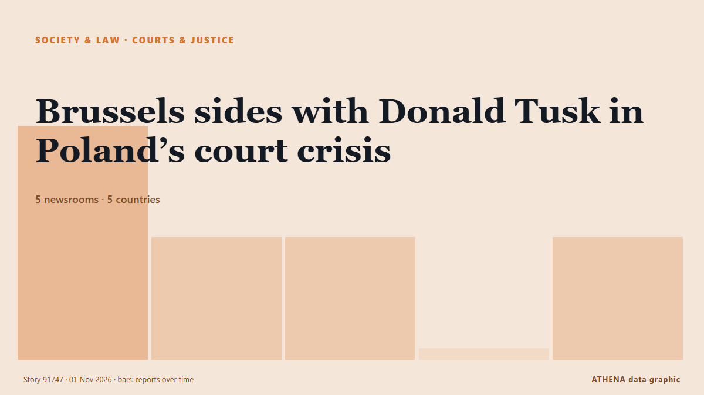

Courts & justice
| 19 Oct | 0 |
|---|---|
| 20 Oct | 0 |
| 21 Oct | 0 |
| 22 Oct | 0 |
| 23 Oct | 0 |
| 24 Oct | 1 |
| 25 Oct | 0 |
| 26 Oct | 0 |
| 27 Oct | 2 |
| 28 Oct | 3 |
| 29 Oct | 4 |
| 30 Oct | 7 |
| 31 Oct | 5 |
| 1 Nov | 1 |

Brussels sides with Donald Tusk in Poland’s court crisis
The confrontation has attracted a response from France's Marine Le Pen and Slovenia's Janez Janša. from Euractiv
Poland FM: Tribunal move 'not elegant,' but necessary
Poland's Foreign Minister Radoslaw Sikorski stated on Saturday that last night's police deployment at the Polish Constitutional Tribunal in Warsaw was "not elegant," but still better than an… from AzerNews
Delta Goodrem impresses judges again with ‘sensational’ Halloween week routine
Singer Goodrem scored 33 for her Viennese waltz. from The Irish News (Belfast)
Polish riot police deployed after court chief suspended
The court frequently ruled in favour of Polish legislation over European Union law. from Euractiv
Polish president Nawrocki pushes his way into top court amid rule-of-law tussle
Karol Nawrocki made his way through protesters around midnight in the latest escalation of his conflict with Prime Minister Donald Tusk. from Politico Europe
Syrian Hacker Behind Fake Tweet That Triggered $136 Billion Market Drop Gets 42 Months in Prison
Ahmad Umar Agha, a Syrian Electronic Army hacker known online as "Th3Pr0," has been sentenced by a U.S. federal court to 42 months in prison for his role in a hacking conspiracy that targeted Western… from The Hacker News
Poland's president returns as court crisis escalates
Polish President Karol Nawrocki turned back to Poland while en route to Senegal after a far-right ally was suspended as head of the country's top court. from RTÉ News
Iran court sentences award-winning filmmaker Jafar Panahi to 5 years in prison
The 66-year-old won the top prize in the 2025 Cannes film festival for It Was Just An Accident. from The Straits Times
Thailand extends activist’s jail term to more than 34 years
A Thai court has sentenced activist Arnon Nampa to an additional two years in prison, bringing his total sentence to over 34 years. from Arab News
Judge opens East Potomac Park probe into potential DOJ misconduct
A federal judge has opened an investigation into concerns that the Trump administration lied to her in the ongoing legal battle over President Trump’s desire to redevelop East Potomac Golf Links. from The Hill
French shooting suspect deliberately targeted Muslims and Africans, says prosecutor
A man suspected of a gun attack in the Paris suburbs last week, killing one person and wounding seven including a child, has admitted to "targeting individuals who appeared to be Muslim or African,"… from The Local France
Mushroom killer Erin Patterson emotionless as appeal dismissed
Mushroom killer Erin Patterson is likely to die behind bars after Victoria’s Court of Appeal quashed her bid to overturn her triple murder conviction. from Sydney Morning Herald
Bayer wins Roundup cancer trial after Supreme Court ruling
The weedkiller Roundup has been accused of being carcinogenic to humans despite no warning on its label. from DW English
Russia's legal siege over assets continues, costing Euroclear hundreds of millions of euros in 2026
Euroclear is facing "multiple proceedings in Russian courts," including a case launched by the Russian Central Bank that seeks to challenge the immobilization of its assets. from Kyiv Independent
Abu Dhabi court jails 8 for life over arms supplies to Sudanese Army
Yasser Al Atta, Salah Gosh, Othman Al Zubair, five others sentenced to life imprisonment in arms trafficking, money laundering case. from Gulf News
Sheikh Hasina's Regime Change Was Planned Days Before Her Ouster: Yunus Aide
Hasina has accused the Yunus administration of allowing perpetrators of violence to escape accountability while pursuing politically motivated cases against Awami League members. from NDTV
Russell Brand denies all charges as he testifies at his rape and sex assault trial
The British actor-comedian acknowledged in a London court on Wednesday that he had been obsessed with sex as a younger man, but denied multiple charges of rape and sexual assault, saying the claims… from PBS NewsHour
Jane Doe can remain anonymous in Cornell case: Judge
The accused men, and their lawyers, are barred from discussing Jane Doe’s identity publicly. from The Straits Times
ATC sentences Imaan, Hadi to 10 years in security breach case
ISLAMABAD: An anti-terrorism court on Thursday sentenced human rights lawyer Imaan Zainab Mazari-Hazir and her husband, Hadi Ali Chattha, to 10 years in prison each in the security breach case. from Dawn